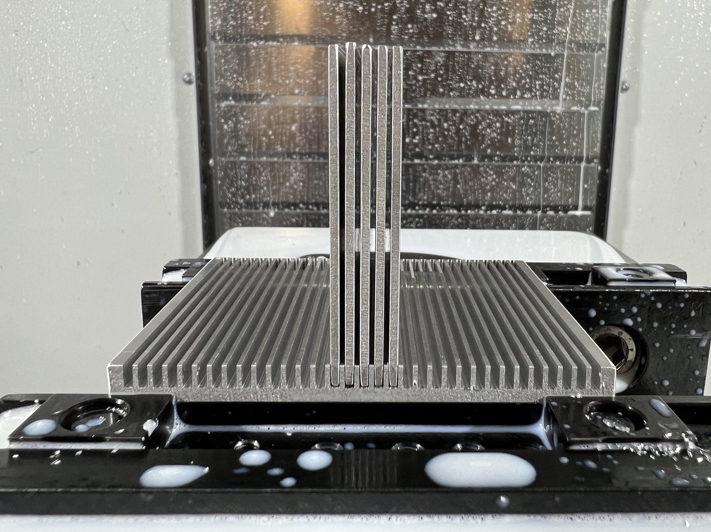
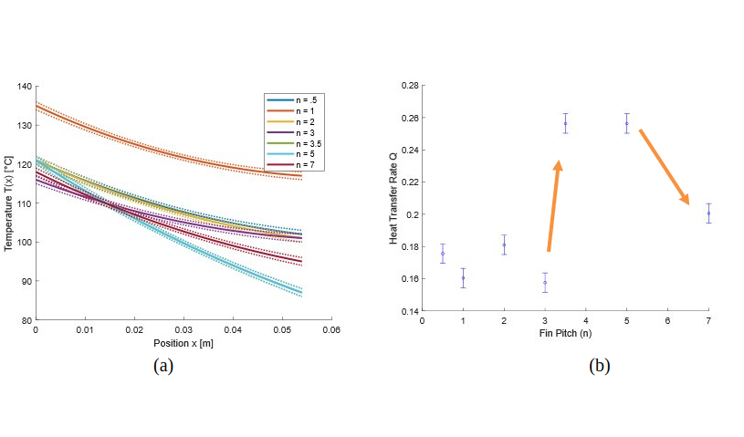
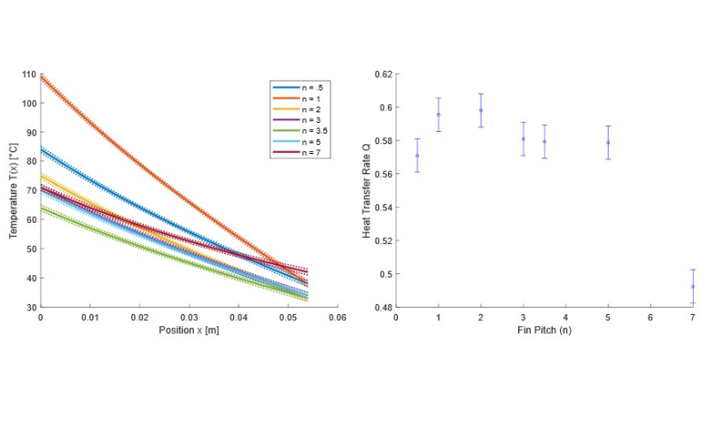

Experimental setup for measuring temperature at the base, middle, and tips of fins. Fan with nozel (left) was
used for forced convection.
To test the effects of fin spacing on heat transfer rate, my team and I proposed and executed a simple experiment.
The main pieces of equipment were a custom machined heat sink and a hot plate. The heat sink was designed to be modular, where
the fins could easily be attached and reattached to the base plate at various spacings. The hot plate was set to a constant temperature, and
the heat sink was allowed to reach steady state before measurements were taken.

Custom aluminum heat sink with modular fins freshly machined on the HAAS VF-2 mill.
Forced convection trials were performed with a fan and nozzle and were compared with natural
convection cases. Thermocouples were used to probe the temperatures at the base, middle, and tips of the fins. A custom
LabView virtual instrument was created to visualize temperature over time and determine when steady state was reached.
Using the Churchill and Chu Correlation, the Nusseult Number (Nu) and subsequently the convective heat transfer coefficient (h) were
calculated for each trial.
\(h=\frac{Nu(L)}{k}\)
Then, natural convection heat transfer rate (Q) could be calculated as
\(Q=hA(T_b-T_\infty)\)
where \(T_b\) is the base temperature, \(T_\infty\) is the ambient temperature, and \(A\) is the surface area of the fin.
Temperature gradient was found with the 1D fin approximation
\(\frac{d^2\theta}{dx^2}-m^2\theta=0\)
where \(\theta=\frac{T-T_\infty}{T_b-T_\infty}\) is the non-dimensional temperature, \(m=\sqrt{\frac{hP}{kA_c}}\) is the fin parameter,
\(P\) is the perimeter, \(A_c\) is the cross-sectional area, and \(k\) is the thermal conductivity of the fin material.
Comparing the temperature gradients and heat transfer rates (Q) calculated with the 1D fin approximation for each trial, we found that the fin heat dissipation effectiveness dramatically decreased at sufficiently small and large fin spacings.

(a) Temperature gradients for natural convection cases. As fin pitch increases, base temperature generally decreases
and gradients become steeper. (b) Convective heat transfer coefficient (b) Q plot for each fin spacing,
which shows a sharp 2-fold increase in efficiency at 3.5 fin widths. There is a subsequent decrease in efficiency at
7 fin widths, indicating that beyond a certain fin spacing, more fins are needed.
These natural convection results fit expectations, because intuitively, heat is trapped when fins are too close, preventing
effective heat dissipation and violating assumptions. For example, \(T_\infty\) was assumed uniform and constant, but this is
no longer true at sufficiently small spacings. On the other hand, at large spacings, each fin must dissipate more heat for a
larger portion of the base, which also reduces effectiveness.
Analysis of forced convection trails was less straightforward due to complicated dynamics and unideal experimental conditions among other factors.
However, we found that fin effectiveness stayed relatively constant for all spacings and temperature gradients weere much steeper than natural convection cases.

Forced convection temperature gradients and heat transfer rates (Q). Q stayed relatively constant across all fin spacings and
temperature gradients were steeper than natural convection cases.
The steeper temperature gradients are due to increased heat dissipation from forced convection. The constant Q values across fin spacings
indicate that fin spacing does not significantly affect heat dissipation in forced convection cases, which is likely due to the prevention of heat
accumulation between fins by the air flow.
Overall, results matched expectations and the optimal fin spacing was found to be ~3.5 fin widths for natural convection cases. We acknowledge that
our experiment was limited by factors such as the imprecise temperature measurement methods and non-uniform airflow across all fins.